Yeisme / admincn-v5 / 设计演示
统一到 AdminCN 的布局与组件
十页同一体系：黑白灰外壳、Sales 式指标与图表、卡片表格、统一字段及右侧 Sheet。
Sales 的看板结构，AdminCN 的统一组件
以下为 shadcn/studio 官方公开截图，仅用于设计对照。免费源码按 MIT 许可适配；Sales 通过现有 Recharts 和业务事实重新实现。
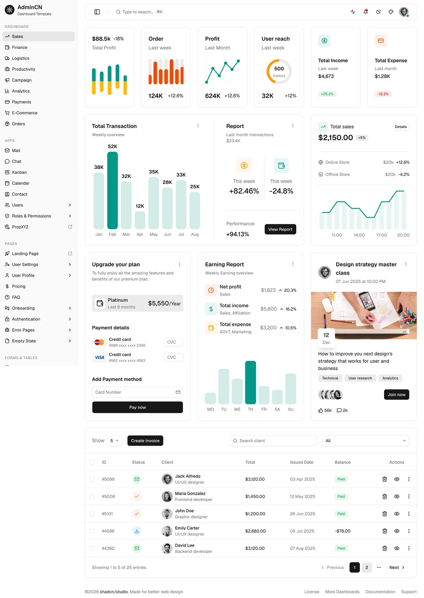
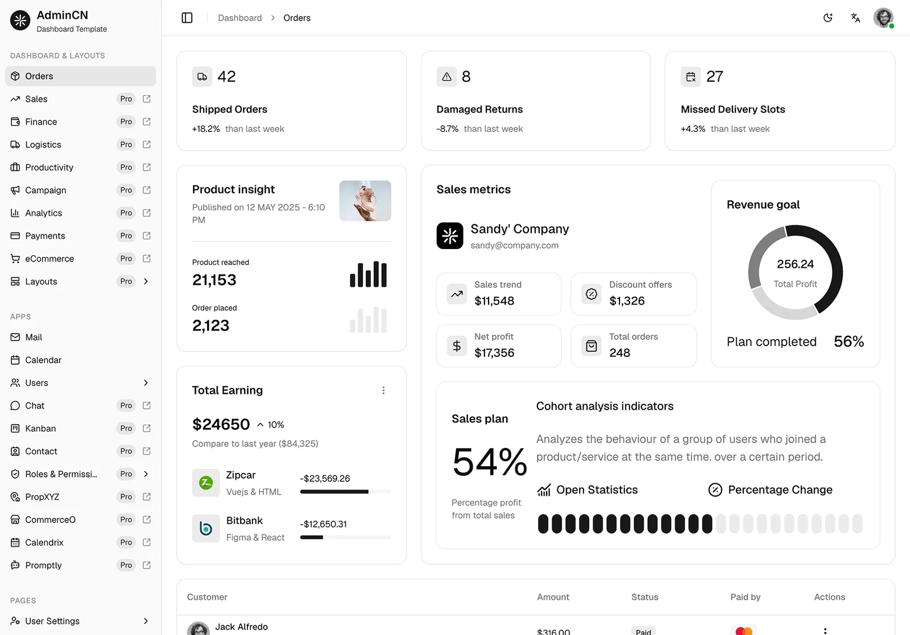
从平铺列表到有层次的工作看板
相同 1440 × 1000 视口。六项指标按请求事实计算，保留异常恢复、核心服务与任务入口。
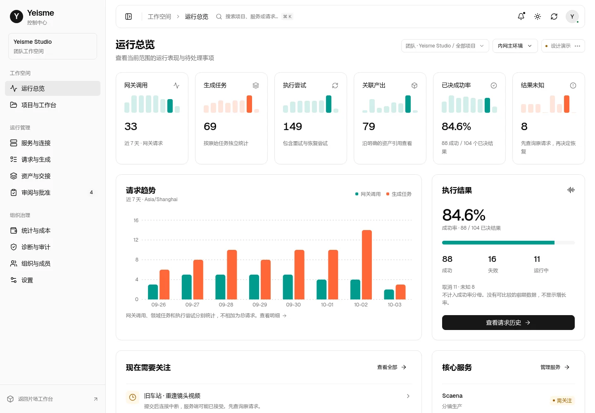
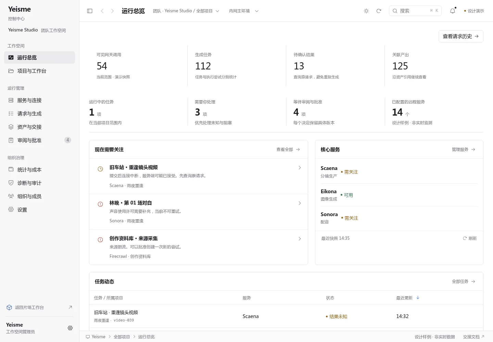
上一版AdminCN 版
完整的卡片表格与清晰的操作区
保留筛选、排序、列设置、选择、导出和分页。单条记录也使用相同组件，不伪造数据填满画面。
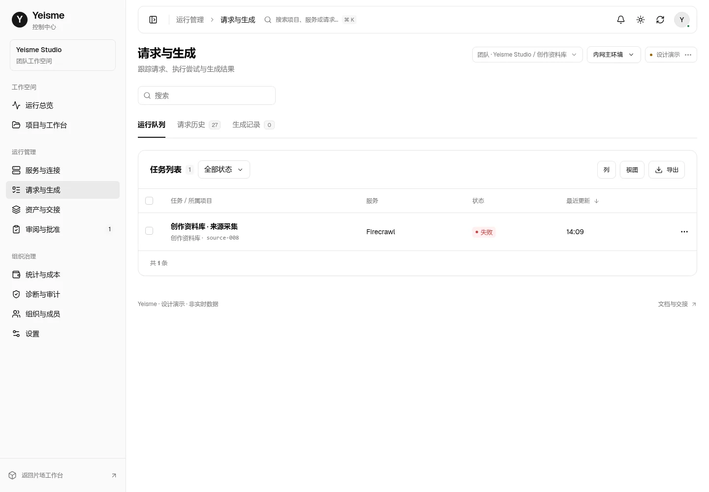
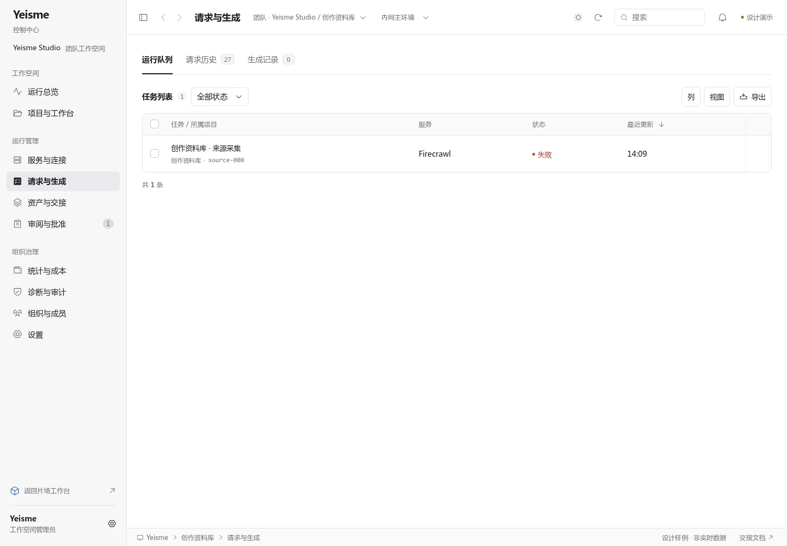
上一版AdminCN 版
详情与配置全部使用模态 Sheet
详情 420px、编辑 560px，小于 640px 全屏。背景滚动锁定，字段、草稿保护与固定底部操作保留。
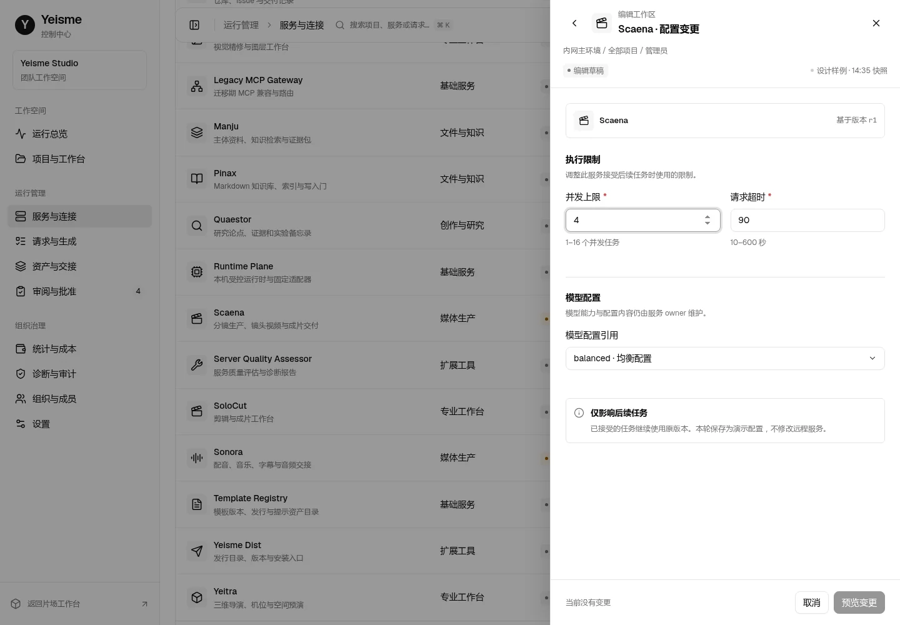
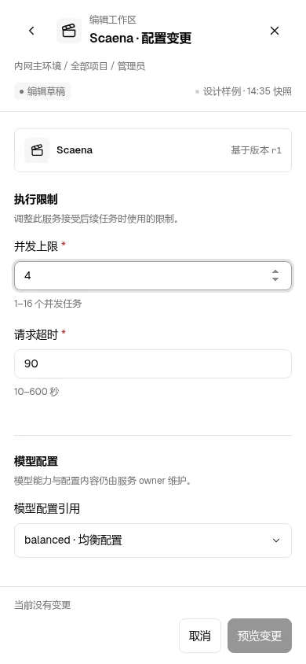
资产、成员、设置与统计
资产保留目录、收藏、备注与预览。组织治理和统计继续使用已有授权与账本口径。
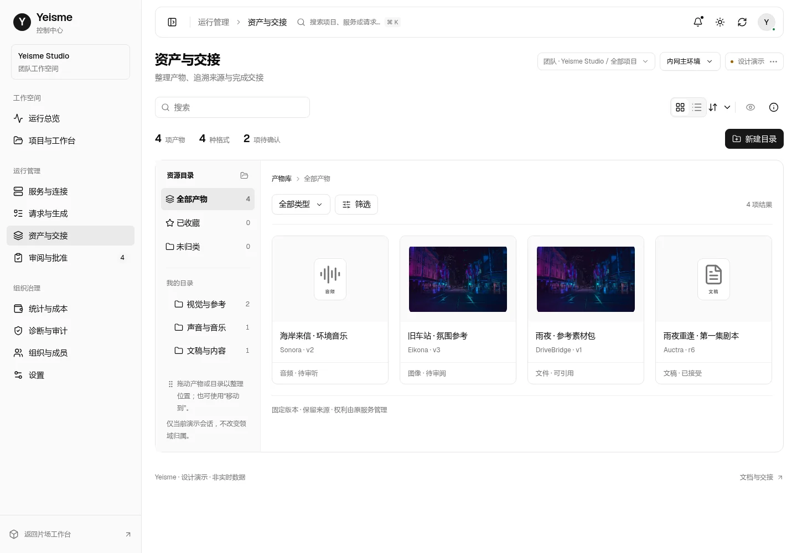
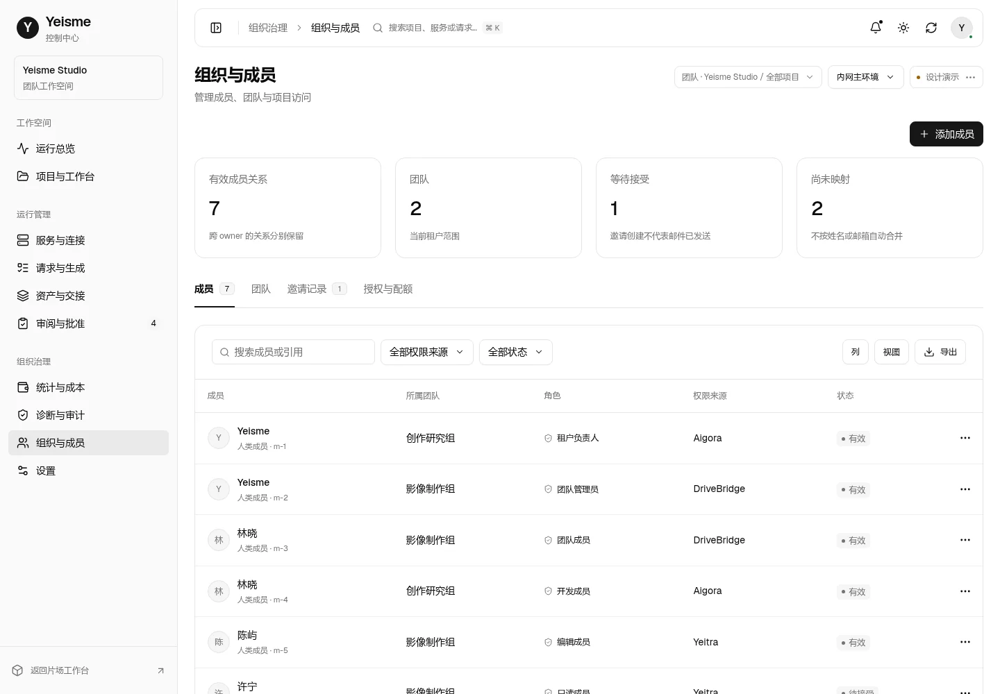
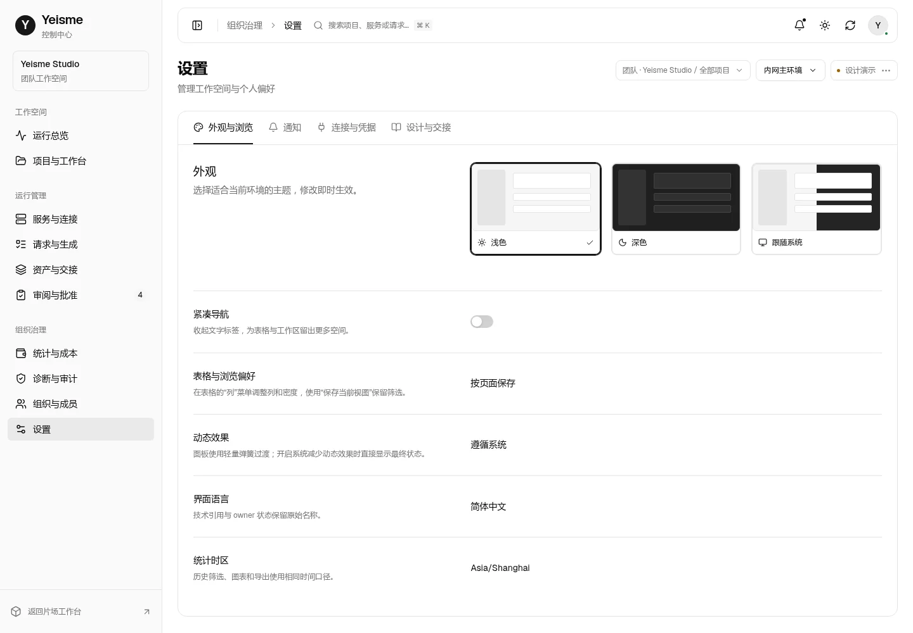
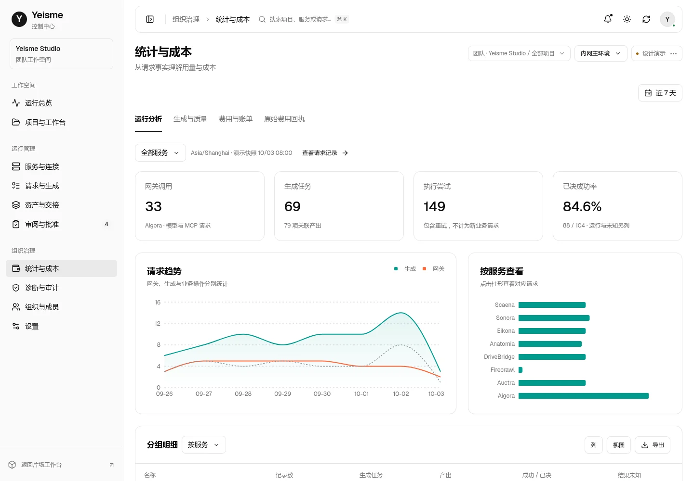
同一套语义令牌的深色界面
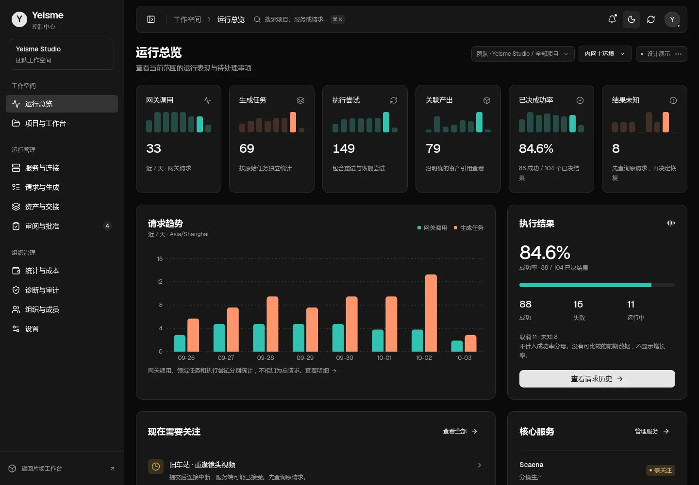